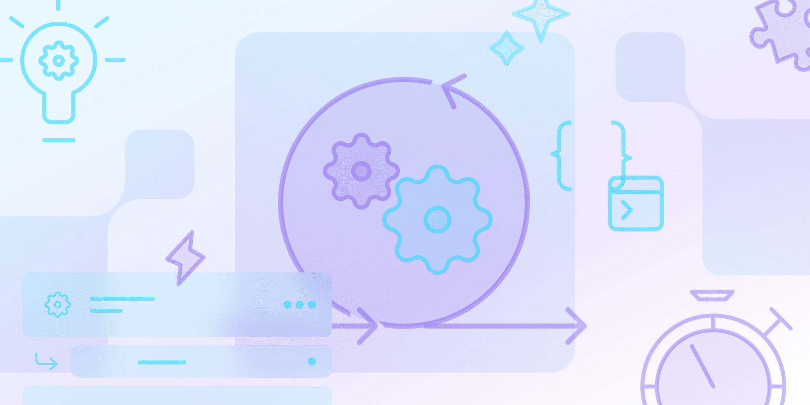

Aula 4 – Eventos do Scrum
Capítulo 4.1 – A Sprint
A Sprint é o ciclo de trabalho que dá ritmo ao Scrum. Cada Sprint possui uma duração fixa e começa imediatamente após o término da anterior. Durante esse período, o time transforma itens priorizados do Product Backlog em incrementos de valor.
O grande diferencial da Sprint é seu foco em entregas curtas e tangíveis. Isso permite coletar feedback rápido dos stakeholders e ajustar o rumo do produto constantemente. Sprints curtas reduzem riscos e aumentam a previsibilidade.
Características essenciais da Sprint
- Duração fixa: normalmente entre 1 e 4 semanas.
- Objetivo claro: guiado pelo Sprint Goal.
- Entrega de valor: sempre gera um incremento utilizável.
- Sem mudanças desnecessárias: o escopo pode evoluir, mas não deve comprometer o objetivo.
- Ritmo sustentável: promove cadência e estabilidade ao time.
O que acontece dentro de uma Sprint?
Dentro de cada Sprint acontecem quatro eventos formais:
- Sprint Planning: onde o time decide o que será feito.
- Daily Scrum: alinhamento diário para inspecionar o progresso.
- Sprint Review: apresentação do incremento para stakeholders.
- Sprint Retrospective: análise interna de como melhorar o processo.
A Sprint não é apenas um período de trabalho — ela é o coração do Scrum, garantindo ritmo, foco e melhoria contínua.